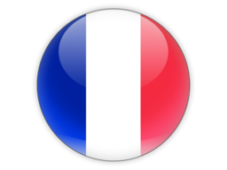

I was born in Italy on 17 April 1991. I lived in Italy until the age of 12, then moved to The Netherlands with my family.
I was born in Italy on 17 April 1991. I lived in Italy until the age of 12, then moved to The Netherlands with my family.

In 2009 I moved to England to study at the University of Birmingham. After earning a BSc in Business Management with Intercalated Year in Computer Science I moved back to the Netherlands.

Before joining Tesco in September 2014 I moved to Saint-Germain-en-Laye, Paris for 6 months to live the French dream with my Polish half, Roksana. Then we moved back to the UK in Hertford. Now I am curretly living in Bangaluru, India on a 3 month placement for Tesco.
In my free time I enjoy biking and hiking in the mountains, playing all sorts of video games except sports games, chilling fun with friends, snowboarding and everything related to snow and I also enjoy a little cooking especially if it isn't just me.
Sinced the Technology Graduate Scheme I have been in one team, that is now called 'Property, Plan Product and Commercial Workbench' (Honestly the name makes no sense).
We are a Product team, but also a service team as we look after the Product Location Service and are developing the Range Service.
In essence the team looks after a large part of the product life cycle in Tesco. The product ranges in store and online, the new buying tools for clothing and the allocation of products for GM and clothing. Before the restructure in March 2015 we used to look after commercial workbench, which is a large set of legacyreports for the commercial team and store managers.
For a large part of my placement I worked on Run Audit for the team, them I was a Technology Manager for the Telecoms MI project and then I was acting Product Owner for the SRD Continuous integration & Continuous Deplymnet implementation.
The run aspect of the team was not particularlly we monitored and the reports provided were not used or understood by everyone.
I started by cataloging the current state of all applications the cell looked after. Through this activity I removed unused applications and moved applications that had wrongly been assigned to us. This formed the base from which we would work to improve the service we were providing. I then set up weekly calls for the whole run team to review the service and share issues and concerns.
Finally, later in the year I worked to standardise and automate a Run Summary Report which the team con reliably get their information from, faster than they could before.
Around January two team members left and I got the opportunity to set in and cover for one of them on the Telecoms Reporting Project.
We were tasked by the Telecoms business team to build a report for the phoneshop store maanges and the area managers.The project was near completion but there were a lot of small issues that needed to be ironed out before we could go live.
I worked with the team in Bangaluru and the stakeholders in the commercial team to make sure no new requiroments where added, and that all the issues they raised were fixed to proper standard.
The Space Range and Display suiute of application is live in all twelve countries that Tesco operated in. There are 3 different versioions and each country has cunsumizations, this makes maintainablity and upgreads very difficult and time consuming.
This project focuses on improving the engeneering platform for SRD to a single code base across all countries and the ability to automatically deploy new code everywhere.
As a Product Owner I worked closly with the Solution Architect and the Tech Expert to refine what was needed to achive this goat and why we needed to do it this way. As well as reviewing how we would achive this ambitious goal.